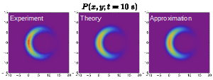

Stokes flow and shape

The behaviour of viscous flows in and around complex geometries is challenging to both predict and understand.
Even so, complex shapes and geometries occur in systems of experimental and industrial interest, like porous materials or colloids.
This complexity has been increased by new manufacturing technologies, like three dimensional printing and microfluidics.
I seek to theoretically understand these complex systems and develop techniques to model their hydrodynamics.
To date this work has focused on the hydrodynamics of long-slender objects.
Some of this work occurred in collaboration with Tom Montenegro-Johnson.
Brownain motion
 At microscopic scales, small objects are randomly jostled by collisions with the surrounding particles, in a process called Brownian motion.
Though first observed almost 200 years ago, experiments are still discovering new and anomalous behaviours such as the non-zero mean drift of a boomerang shaped particle.
My work draws together both probabilistic and hydrodynamic techniques to explain and understand these systems.
This ranges from modelling the diffusion of a helical bacterium to providing quantitative tools to predict the probability distribution function measured by experiments.
Some of this work occurred in collaboration with Maciej Lisicki.
Artifical microsystems

The creation and control of microscopic devices potentially helps develop keyhole surgery techniques and new manufacturing processes.
However at these scales an object's motion and behaviour is dominated by physicochemical principles.
Working closely with experimental groups, I have developed simple models to explain the behaviour of artificial microswimmers and self assembling matter.
These models help the groups understand the fundamentals of the behaviour seen while also guiding the construction and design of new devices.
This work has occurred in collaboration with Wendong Wang and Ahmed Mourran.
Active matter
Collections of microscopic moving entities, like bacteria, create a unique physical system called active matter. These entities inject energy into the system at a microscopic scale, thereby making the active matter systems far from equilibrium. As a result active matter exhibits many surprising properties, like the spontaneous creation of flow when confined or liquid-gas phase transitions when only repulsive interactions are present. In my work, I have been interested in how these dynamic transitions occur and what controls their formation.
Quantum vortices
Quantum condensed matter systems, like Bose-Einstein Condensates, exhibit surprising and complex behaviours.
These systems can be controlled very precisely and so act as an emulator for many complex quantum systems.
In my Masters I investigated the dynamics of vortices within these quantum fluids, in the mean field limit.
This involved developing asymptotic theories to explain the dynamics of the vortex line and the possibility for multiple spin vortices to occur.
This work was done under the guidance of Andy Martin and Tapio Simula.